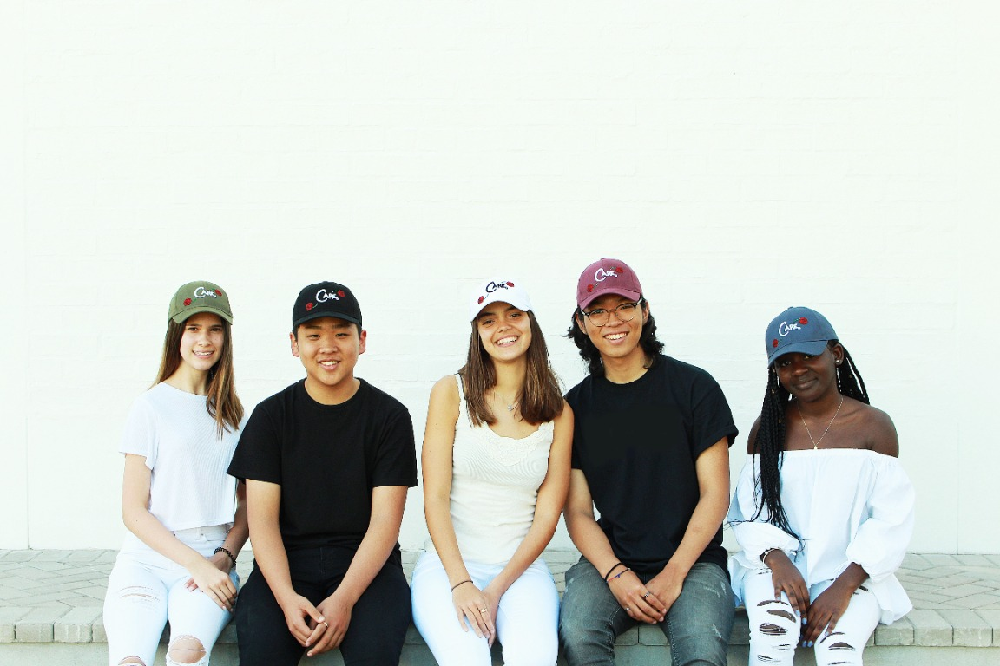
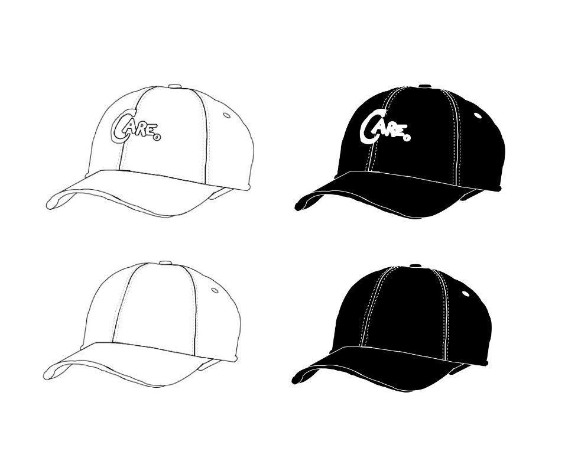
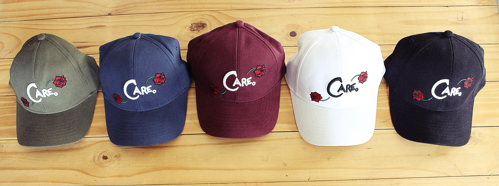
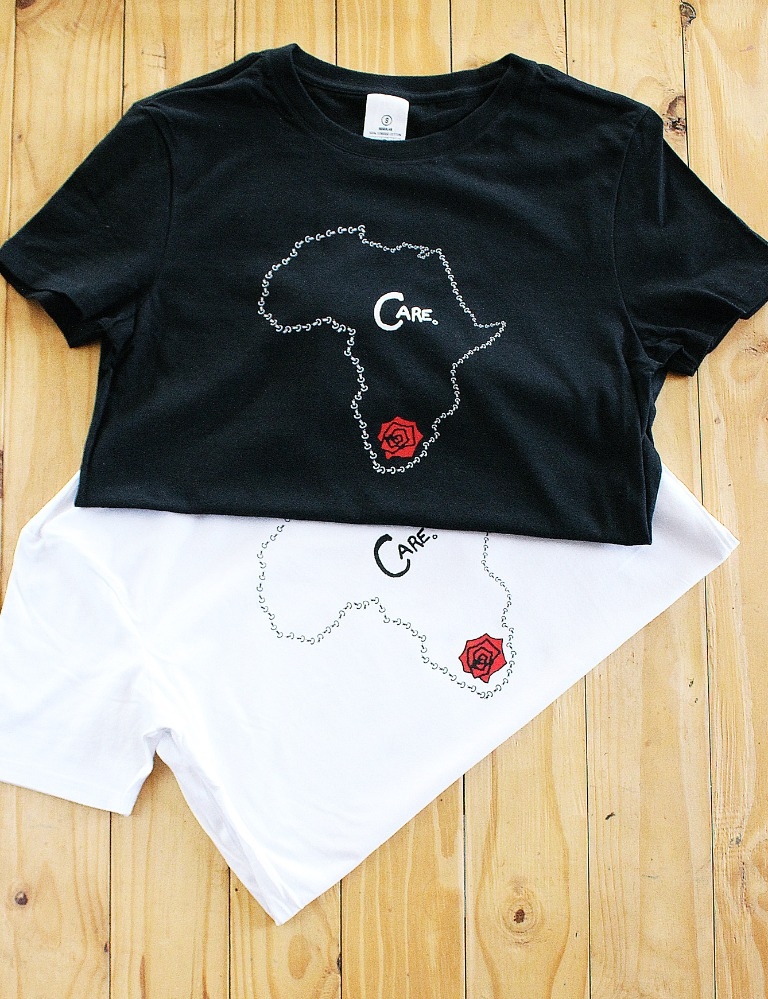
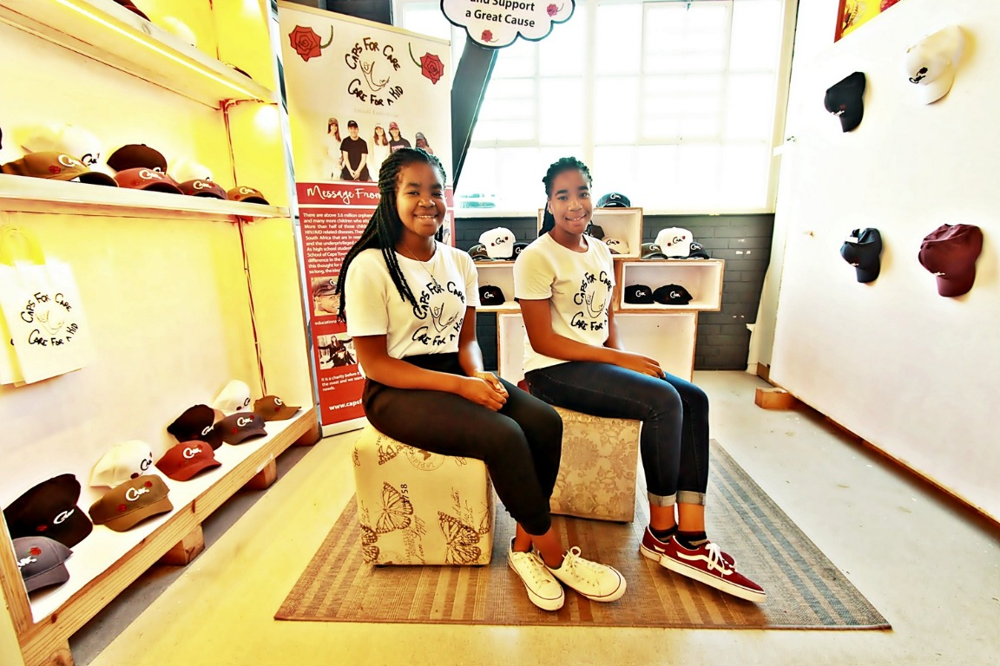
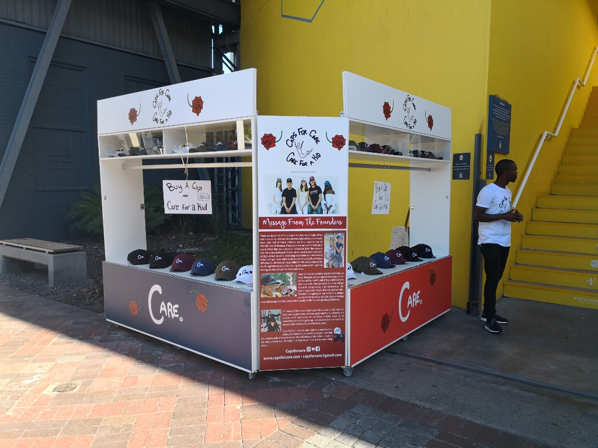
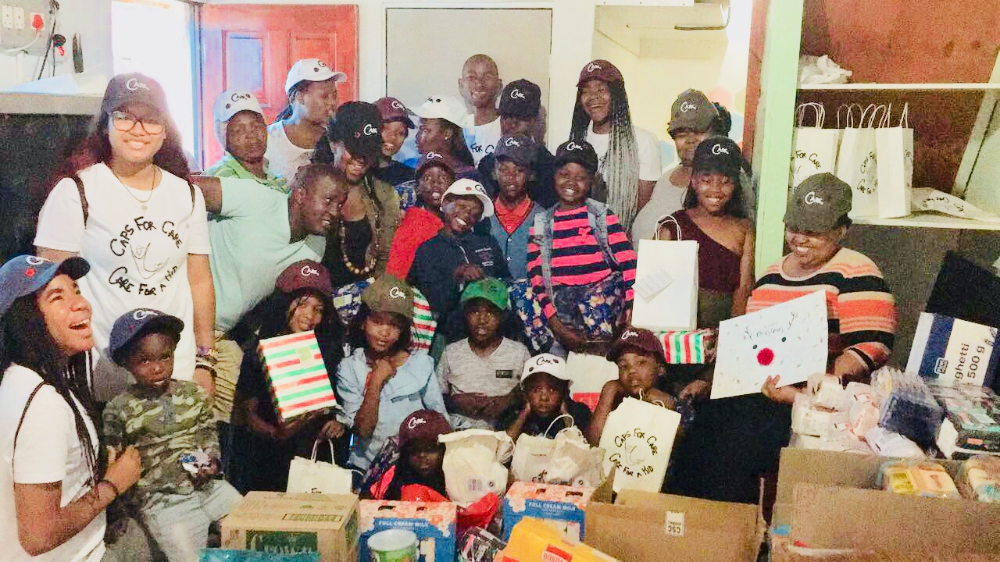
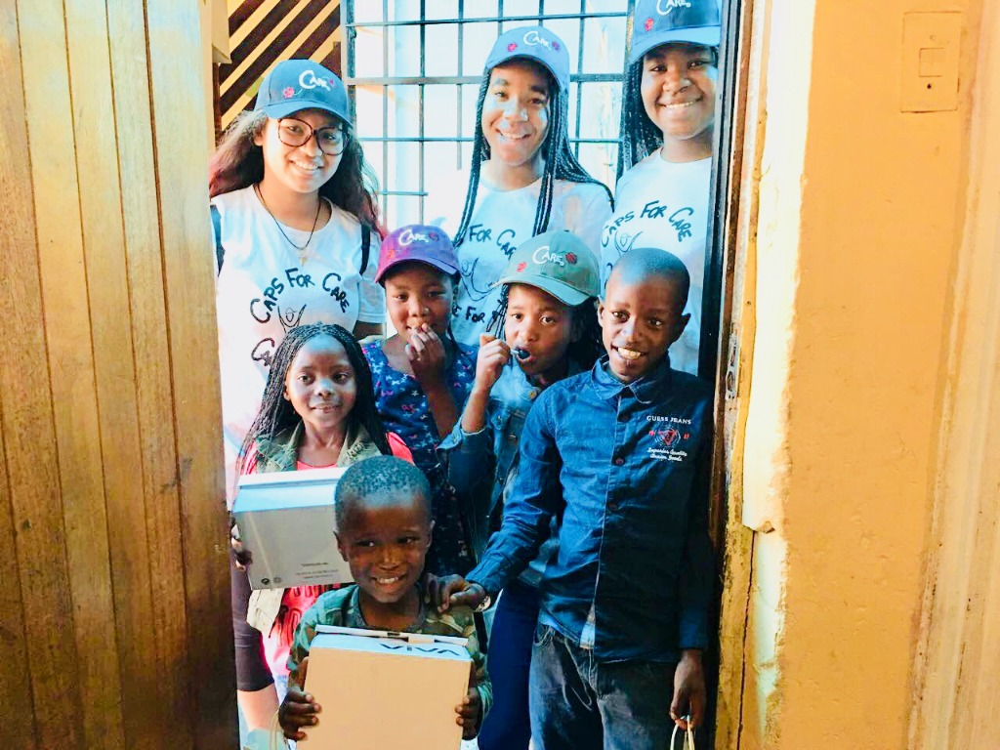

Personal and social impact / Non-profit
Caps For Care
A self-initiated non-profit project aimed at bridging inequality in Cape Town through design, mentorship, and care.

01 · The project
What Is Caps For Care?
Caps For Care began as a passion project between my sister and me, inspired by the stark socioeconomic inequality we witnessed growing up in Cape Town, South Africa. What started as a product idea evolved into a community-centered non-profit initiative focused on uplifting young girls and children in marginalized communities.
02 · Why we started
Our Mission
To use design, storytelling, and purpose-driven products to:
- Generate funding for local children’s homes and girls’ shelters
- Foster real connection with the communities we support
- Encourage mentorship, creativity, and cultural exchange
- Challenge transactional models of giving with more meaningful impact
03 · Brand and product
The Product — The Care Cap
Designing with love, literally.
Our main product was the Care Cap, a simple cap branded with a custom-designed rose (symbolizing love) and the word care. I created the brand identity, logo design, and merch mockups, and handled all visual production.



04 · Growing the project
Where We Sold
We began selling online and through school pop-ups and beachfront sales. Our biggest breakthrough was securing a stall at The Watershed, a premier tourist destination in Cape Town.
I was 17 and my sister was 14 when we ran our store at the Watershed. We also hosted a pop-up shop.


05 · Community impact
Where the Money Went
All proceeds funded initiatives for children’s homes and girls’ shelters:
- Christmas drives — gifts, beach days, and outings around Cape Town
- School essentials — stationery, sanitary products, food, and toiletries
- Art and expression supplies — for safe houses supporting girls affected by gender-based violence
- Girls’ night sleepovers — talent shows, bonding, and cultural exchange activities
- Mentorship circles — building trust and listening to lived experiences directly


06 · Reaching more people
National Recognition
- Featured on South African national TV, reaching over 2 million viewers
- Led to spikes in online orders and extended our reach
- We pitched our mission to firms and organizations seeking community partners
- Learned to position social impact through branding, research, and storytelling
07 · Looking back
What I Learned
While we created real impact, we also had to reflect critically on our approach. As we grew older, we became more aware of:
- The importance of genuine, reciprocal community relationships
- How good intentions must be matched with careful structure and accountability
This experience shaped how I approach ethical design, storytelling, and systems thinking to this day.
08 · What I brought
Skills Highlighted
- Brand identity & product design
- Community engagement strategy
- Social impact storytelling
- Research, pitching, and public communication
- Cultural humility and systems awareness
You have reached the end of this page :)
09 · Let’s connect